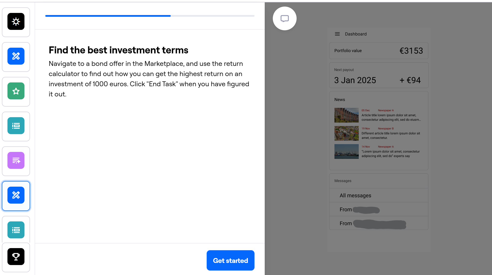

I always try to summarize large sets of information visually on a board.
Mobile Investment App Design
Skills:
- User Research
- Ideation
- UI Design
- Information Architecture
- User Testing
Tools:
- Figma
- Miro
- Maze
Timeline:
- 5 months
Company:
Challenges
Solutions
The current user base was inaccessible for user research.
Interview people of similar demographic profile.
Interview account managers who talk to the users for hours every day
No platforms with the same set of functionalities, difficult to find inspiration.
Get inspired by best practices from other finance apps.
Look at e-commerce field for additional inspiration
Project Introduction
The project involves designing a mobile application version of an investment management platform for LeadMind's client. The platform serves private investors, offering bonds and real estate investment opportunities across a range of companies. The project's scope encompasses creating a concept and design for the mobile application.
The client company had several goals for their mobile app project:
- Improve online security. The mobile app should enable Multi Factor Authentication for accessing the desktop web version of the platform.
- Expand the platform with a new Marketplace page. Currently, investors would have to find out about new investment opportunities from newsletters or ads, and get in contact with sales agents to invest. The Marketplace should enable existing investors to browse and invest into new opportunities right on the platform, leading to increased sales for the client company.
- Enable users to access most important features from anywhere, via a mobile version of the platform.
These goals and other discussion from the initial briefing formulated the following design requirements:
- The app has to be accessible for the existing user base which mostly consists of people aged 51-80.
- The design should be optimized for mobile use, by focusing on tasks users are most likely to do while away from their desk.
The remaining requirements will come from the desk and user research.
Challenges:
- The actual user base was inaccessible for interviewing or any other kind of user research. The company has to protect the customers' privacy, and their own experience indicated that investors tend to be very private, and strongly dislike being contacted for anything other than their own investments.
- Solution: talk with people of similar demographic profile, and talk with account managers at the client company, who really get to know the users as part of their job.
- It was difficult to find similar competitor apps with a similar set of features. Also most apps that could be directly used for competitive analysis or inspiration have exclusive access, just like the platform for this project.
- Solution: analyze more general investment apps and other finance related interfaces, and pick out most applicable best practices.
Research approach
I conducted user interviews with people of similar demographic profile as the user base. I was looking to find out about their preferences and habits in regards to managing their finances online, as well as any pains they have using their usual apps and websites. I asked them specifically about their experience (as in how they found it) with investing via other platforms and with using their banking apps, their approach to managing finances, use of other digital tools and digital security.
For desk research, I looked at design examples of more open investment platforms, as well as banking apps and online shopping experiences. I also supported it by looking for discussions online about the UX of these apps, to look for users' opinions on their design.
This proved to be a challenge in itself, as most discussion of investment apps revolves around legal conditions and fees associated with using them. It seemed that UX design of these platforms rarely factors into a users' decision for using them. Eventually I managed to find design related opinions by looking for discussion threads that discussed UI major redesigns. This is when users are most vocal and critical of even the smallest details.
Additionally, I read scientific papers that analyze the way design of investment apps can influence user behavior, and official guides for digital UI accessibility.
I finalized the research phase by collecting the insights I gathered into an Affinity Diagram. It let me organize my findings, and look for connections that may have been missed otherwise.
Research Results
The most important insights I identified in research that I should focus on were:
- Different users prefer to see data differently. Some like graphs, some want detailed breakdowns in Excel sheets, and some just want to see a couple of numbers that summarize all the changes.
- Users of different levels of “tech savvynes” mostly understand the imprtance of MFA for security. They find some methods a lot more borthersome then others. For example, scanning a QR code with the phone's camera is a lot more convenient than finding and typing in codes, while offering seemingly the same security.
- Users typically fall into two categories: passive investors and active monitors:
- Users that just check in on their investments once in a few months, download an occasional document when needed and that's it. They tend to manage their investments passively, sometimes only doing the bare minimum.
- The other type of user needs to see as much information as possible about all of their investments. Even if they are managed by a fund/company/advisor. These users tend to prefer to use desktops for most of their finance related work, but can occasionally find themselves needing to complete a task while on the phone.
- While these two types can be seen as opposite extremes in their approaches, there isn't that much ground between them.
Additionally,
- Users prefer to see specific figures and dates about their investments. Graphs are rarely useful by themselves.
- Most often users access investments like these to check dates for receiving returns, to see updates, and messages.
- When browsing new offers, the most important tool is filtering out offers that don't suit them.
- There are specific accessibility guidelines developed that fit the projects aims (pictured below).


Summary of the most relevant accessibility requirements
Ideation
I ideated on my findings in a few rounds of diverging and converging, making sure to include the client into the final one. This way I new the solution I arrived at was aligned with both their vision and the research findings. The client's involvement in the ideation process also helped ensure the solutions proposed stayed within a realistic and achievable scope for the developer team.
The concept I made is an app that complements the platform by serving the needs of both casual and more methodic user types. The UI is focused on providing quick ways to complete the most common tasks, while allowing to do everything the website version allows to do. The design makes it easy to access MFA for website login, viewing the status of current investments and analyzing potential of new investment products.
Design
I started designing by creating a flowchart-like site map of the app. It was useful to think through all the connections and paths users might take to reach certain functions. It also ended up serving as a reference for the screens that needed to be made for wireframing.
The next step was wireframing. I sketched out the layout of the main parts of the app, focusing on key user flows like accessing investment data and completing MFA. I explored some ideas for showing the users' portfolios and returns, as well as ideas for Marketplace listings.
The wireframe has eventually turned into a full fledged lo-fi prototype that I could use for testing. I made sure the prototype covers a complete experience of the app, including all the main sections and features, so that navigability can be tested, among other things.
Separately from this, I was working on finding a visual style for the app. The main platform had an outdated look, and the client has encouraged me to explore new concepts for it.
I explored a lot of options for colors and visuals, before eventually ending up with a warm yellow-orange palette, which is also supported by accessibility research (avoiding cold colors).

Testing and Iterations
I decided to focus the testing on accessibility, navigation and communicating data on investments, because improvements in these areas would lead to the most value for both users and the business.
The testing was conducted on a small group of users representative of the user base, as well as fellow designers and users unfamiliar with investing. I ran usability tests on key features like portfolio viewing and investment analysis, as well as navigation in general. Using Maze, a tool for creating interactive user test, I made a flow where testers are given tasks about finding information in the app. I also followed those up with questions, where users rated the navigation, and shared their thoughts. This way I received both quantitative and qualitative data.
The main points highlighted by user tests were:
- Unclear wording in names of sections, which hurt the navigability of the app
- Not clear enough representation of terms on the return calculator for new offers
- Which view options were the easiest to understand - this was a little bit of a surprise

Examples of Maze blocks from the user testing
I also tested for WCAG accessibility guidelines. I went through the entire design and checked color contrasts, text size and touch target sizes with the help of a specialized plugin. I adjusted the areas that fell short of AAA requirements, and pushed some elements even further. As an extra measure, I measured the button sizes on phone screens of two different sizes and compared those to the guidelines.
Examples of changes I made based on testing results:
Final result
By the end I created a high fidelity prototype showcasing my design.
Next steps
If I could continue on the project after delivery, I would focus on improving accessibility and findability across the app. I would design a system that collects data about the use of the app - such as time in seconds spent on certain screens, what is the final screen a user was on before closing the app, paths users take to reach certain functions. I would then be able to use this anonymized information to see which areas of the app may be causing trouble, where are navigational improvements needed, and what functions do users want to access most often.
Learnings
- I learned how important it is to be adaptive with your planning. It can be very useful to just redo the planning for the project, when the plan that was made in the beginning stops being applicable.
- The value of organized and systemic collection of information. I made sure to keep the information I collected organized by type and source and such, to make analysis more straightforward. What I learned to do moving forward is emphasizing the systemic part of the equation. When I make a folder to collect desk research data, I should make sure that is the only folder with desk research data.
- Strategic approach to client communication. Availability of the client contact was limited and inconsistent. At the same time, I had more and more questions as the project moved on, as I learned more about the complicated and rigid nature of an investment managing company. I adapted around this by looking for ways to get the most value for me per clients’ minute of time.
- Importance of high quality visuals in designs. The focus of this project was in designing usability of the app, so I deprioritized visual design somewhat. While everyone was on the same page about this, despite their intentions, people can’t help but evaluate what they see.